勤怠実績を修正・確認する
打刻を忘れた場合は、［勤怠実績］画面から勤怠実績を修正することができます。
休暇や半日休暇、時間休暇の登録や、指定した期間の勤怠実績を閲覧することもできます。
未来日に勤怠・休暇実績を登録することもできます（出退勤打刻は登録できません）。
ヒント |
|
|---|
 勤怠RECO［個人用］操作マニュアル
勤怠RECO［個人用］操作マニュアル
勤怠RECO［個人用］
操作マニュアル
打刻を忘れた場合は、［勤怠実績］画面から勤怠実績を修正することができます。
休暇や半日休暇、時間休暇の登録や、指定した期間の勤怠実績を閲覧することもできます。
未来日に勤怠・休暇実績を登録することもできます（出退勤打刻は登録できません）。
ヒント |
|
|---|
［勤怠実績］をクリックする

「勤怠実績」画面が表示されます。
打刻を忘れた日の［勤怠修正]をクリックする
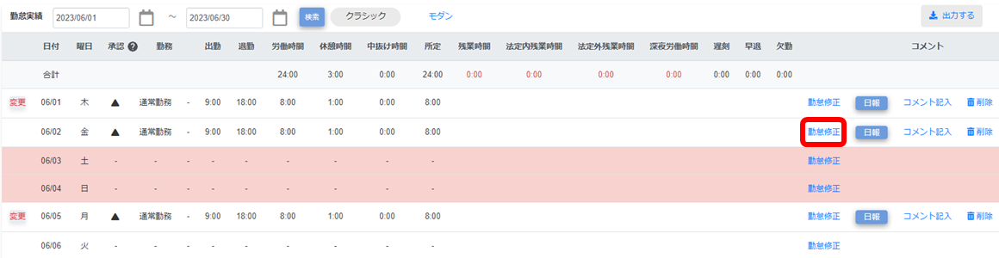
修正画面が表示されます。
「打刻時間」と「勤務時間」を修正する
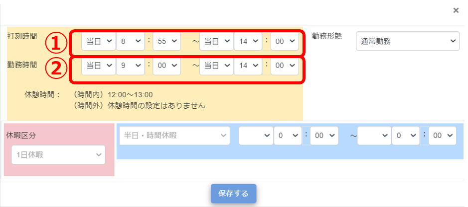
打刻時間は実働に合わせて1分単位で入力します。
勤務時間は打刻時間に合わせた時間を入力します。分単位はあらかじめ会社で設定されています。
【例】勤務時間が15分単位の場合
打刻時間 8:47〜18:25 勤務時間 9:00〜18:15
【例】時間内勤務が15分単位、時間外勤務（残業など）が1分単位の場合
打刻時間 8:47〜18:25 勤務時間 9:00〜18:25
修正内容を確認し［保存する］を選択する
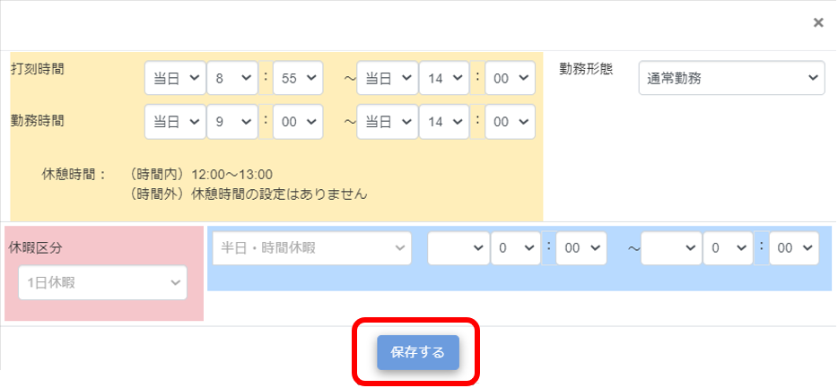
画面上部に「登録が完了しました。」とメッセージが表示され、勤務実績画面に出退勤時刻が表示されます。
休暇や欠勤などを登録する場合の勤怠実績処理について説明します。
［勤怠実績］をクリックする
休暇を登録する日の［勤怠修正］をクリックする
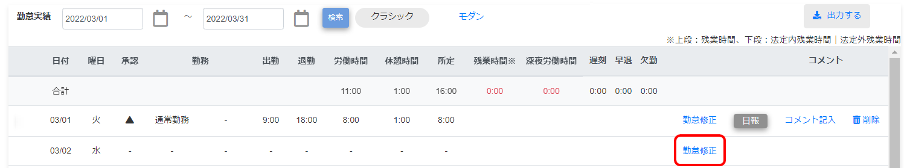
修正画面が表示されます。
［１日休暇］をクリックし、登録する休暇を選択する
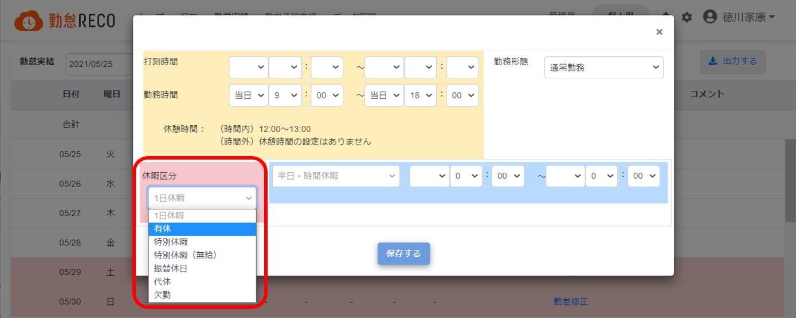
［保存する］を選択する
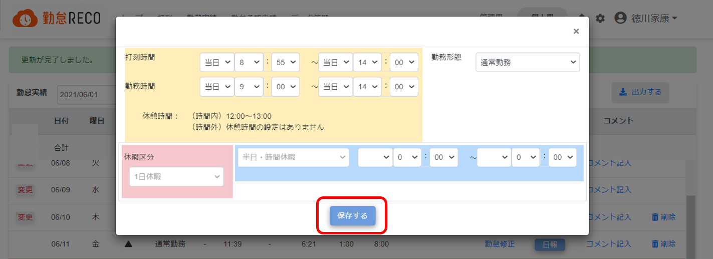
ご注意 |
|
|---|
半日休暇や時間休暇を登録する場合の勤怠実績処理について説明します。
［勤怠実績］をクリックする
「勤怠実績」画面が表示されます。
半日休暇や時間休暇を登録する日の［勤怠修正］をクリックする
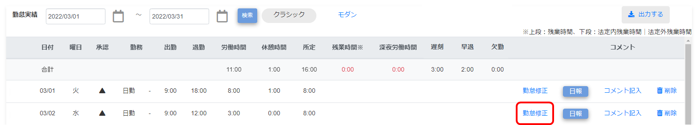
［半日・時間休暇］をクリックし、登録する休暇を選択する
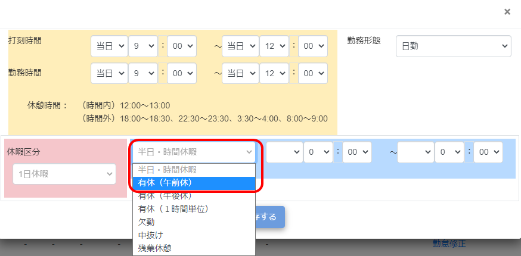
休暇取得時間を入力する
※会社の方針で15分単位または30分単位での勤怠入力が設定されている場合、
中抜け時の戻り時刻は、外出時刻に対して指定の分単位で入力する必要があります。
【例】30分単位の勤怠入力が設定されており、10：05～10：20に中抜けした場合は、「10：05～10：35」を入力します。
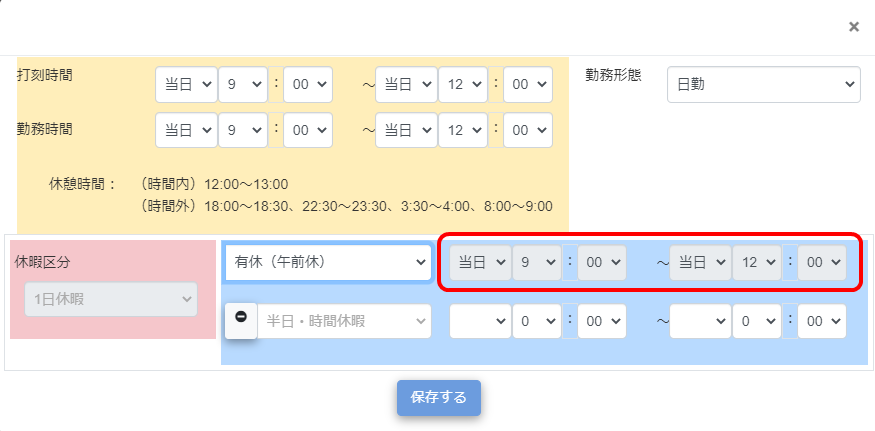
［保存する］をクリックする
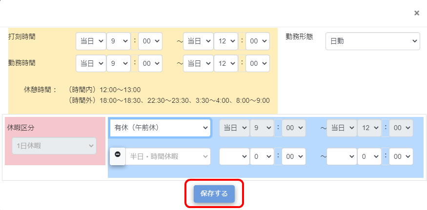
画面上部に「更新が完了しました。」とメッセージが表示され、半日休暇・時間休暇の処理が完了します。
勤怠修正をした日の左端には「変更」と表示されます。
ヒント |
半日休暇を選択した場合は、時間休も同時に選択できます。 【例】 勤務時間が9:00～18:00で、9:00～14:00まで有休を登録する場合
|
|---|
休日出勤し、代休を登録する場合の勤怠実績処理について説明します。
ご注意 |
勤怠RECOでは、代休は締日で失効する仕様となっております。 付与された代休は当月度内にご使用ください。 |
|---|
［勤怠実績］をクリックする
「勤怠実績」画面が表示されます。
休日出勤を登録する日の［勤怠修正］をクリックする
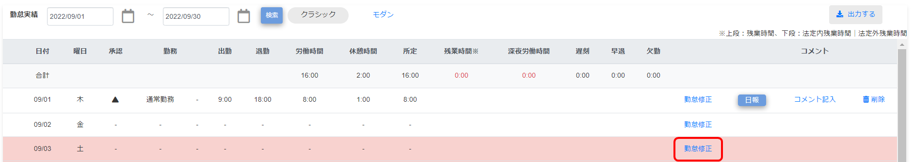
［振替日］は入力せず、［保存する］をクリックする
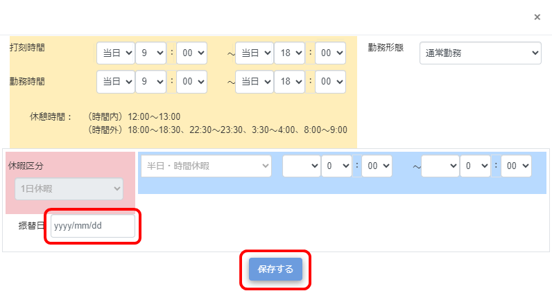
［振替日］を入力すると振替休日が付与され、代休は付与されません。
画面上部に「更新が完了しました。」とメッセージが表示され、休日出勤の代休付与処理が完了します。
代休を登録する日の［勤怠修正］をクリックする
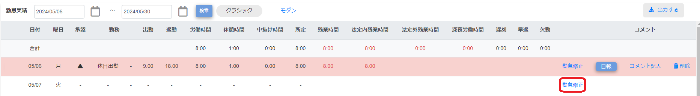
［1日休暇］をクリックし、代休を選択する
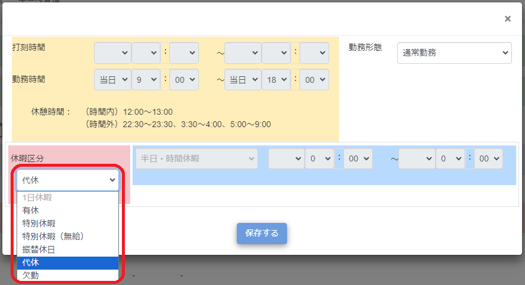
［保存する］をクリックする
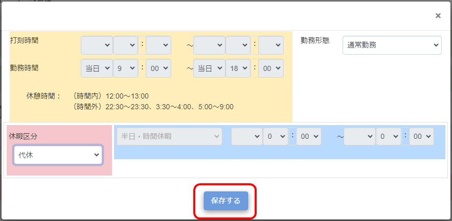
画面上部に「更新が完了しました。」とメッセージが表示され、代休の取得処理が完了します。
休日出勤し、振替休日を登録する場合の勤怠実績処理について説明します。
［勤怠実績］をクリックする
「勤怠実績」画面が表示されます。
休日出勤を登録する日の［勤怠修正］をクリックする
［振替日］に振替休日の付与日を入力する
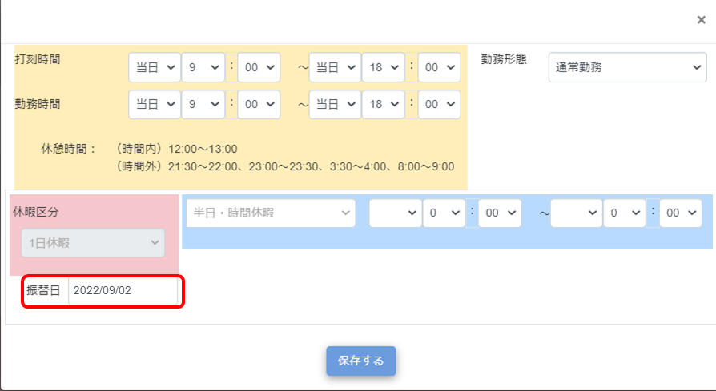
振替休日の付与日は、休日出勤より前の日付でも指定できます。
［保存する］をクリックする
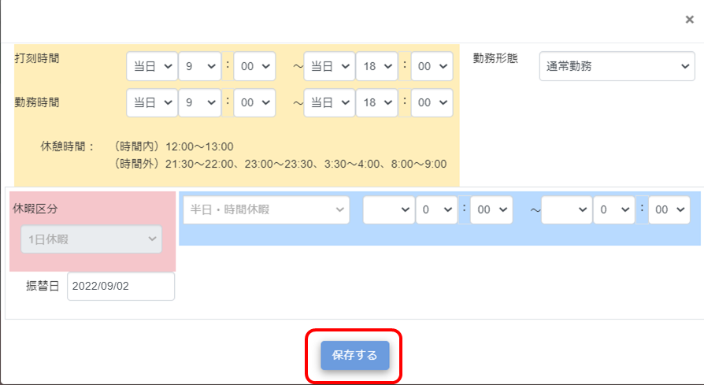
画面上部に「更新が完了しました。」とメッセージが表示され、休日出勤の振替休日付与処理が完了します。
振替休日を登録する日の［勤怠修正］をクリックする
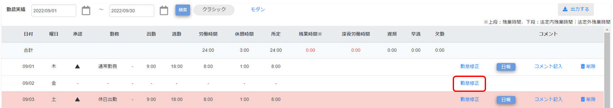
振替休日の付与日より後の勤務日であれば、どの日付でも指定できます。
［1日休暇］をクリックし、振替休日を選択する
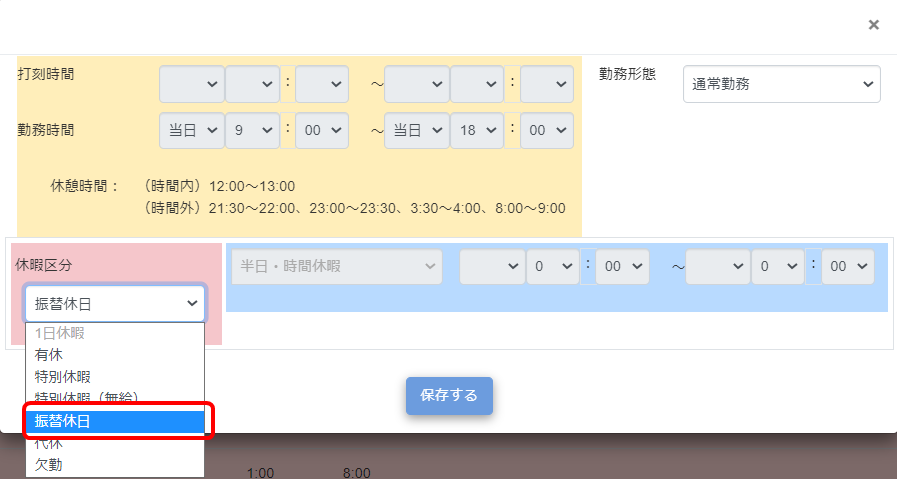
［保存する］をクリックする
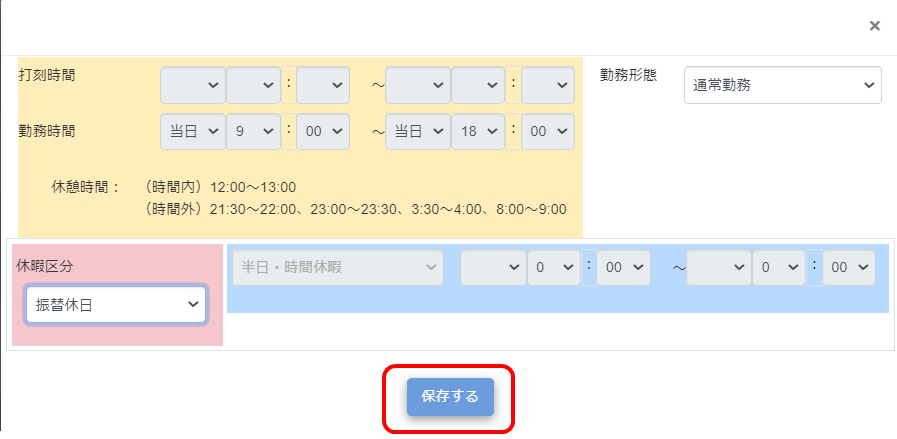
画面上部に「更新が完了しました。」とメッセージが表示され、休日出勤の取得処理が完了します。
［勤怠実績］をクリックする
「勤怠実績」画面が表示されます。
勤怠実績を確認したい日付の行を見る
［勤怠実績］画面の詳細は以下の通りです。
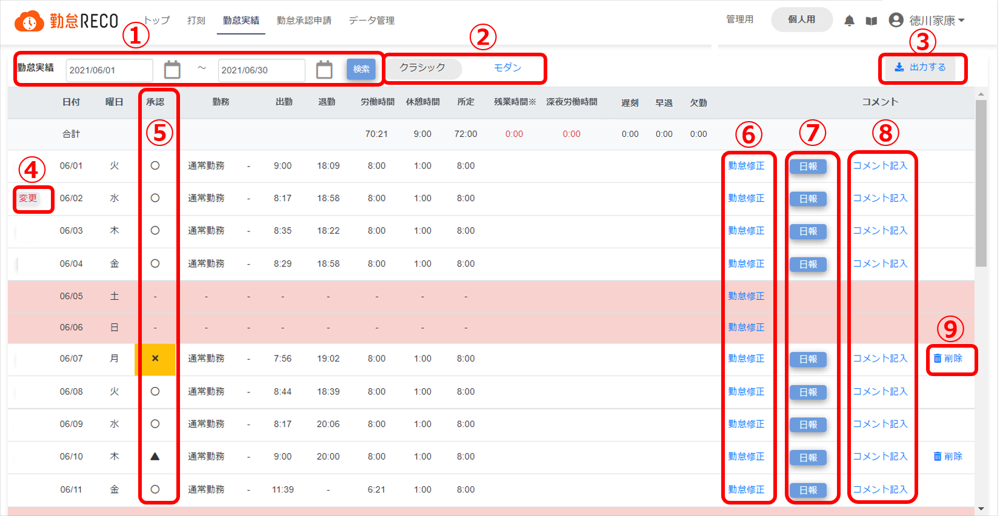
表示期間
勤怠実績情報を表示する期間を指定します。
≪手順≫
日付表示部分（または ）をクリックし、カレンダーで表示したい日を選択
）をクリックし、カレンダーで表示したい日を選択
［検索］をクリック
指定した期間の勤怠実績が画面に表示
表示形式
勤怠実績の表示形式を［クラシック］または［モダン］から選択できます。
クラシック：上図
モダン：下記のような表示です。
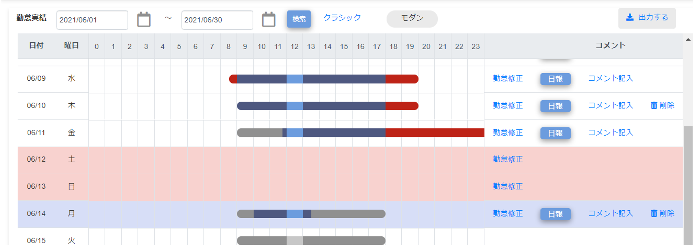
青：実績
赤：残業
グレー：予定
それぞれの色の薄い部分は、会社で定められた休憩時間です。
出力ボタン
クリックすると表示されている表示形式で勤怠実績を印刷します。
変更マーク
勤務時間が修正された日に「変更」と表示されます。
承認状況
その日の承認状況です。
〇：承認済み
▲：承認待ち
ー：一時保存
×：否認あり
承認者から勤怠承認に関するコメントがあると黄色になります。
勤怠修正
打刻忘れなどで勤怠時刻を修正したい場合は［勤怠修正］をクリックすると修正画面が表示されます。
修正方法について詳しくは、「打刻を忘れた場合」を参照してください。
日報
クリックすると、その日の日報を入力できます。
詳しくは、「日報やプロジェクト別工数を入力する」を参照してください。
コメント記入
日毎にコメントを入力できます。遅刻や早退理由などメモとして使用できます。
削除
クリックすると、その日の勤怠実績を削除します。
ヒント |
|
|---|